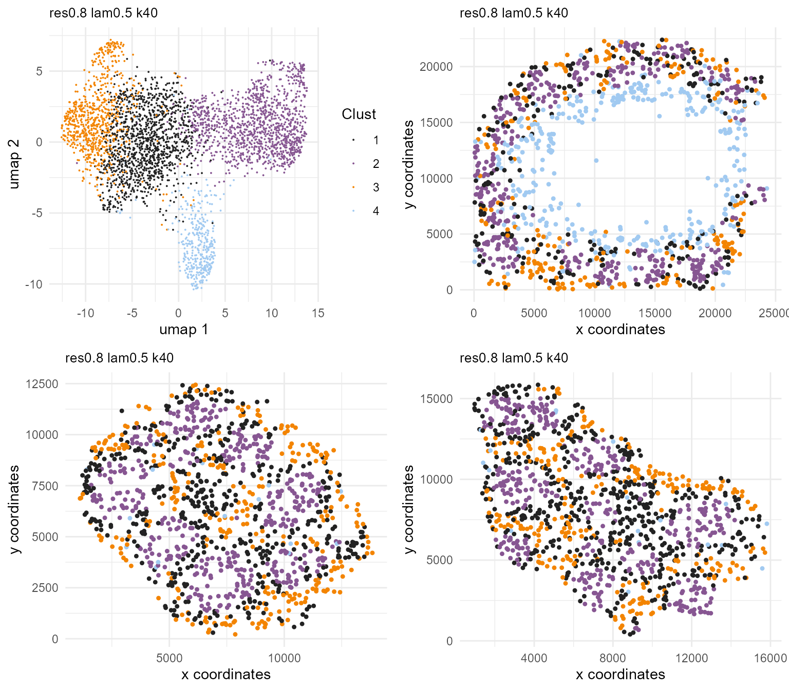

multiple-datasets.RmdBanksy allows the analysis of multiple datasets. Apart from taking in single inputs, the BanksyObject constructor can take in a list of expression matrices and cell locations. The user should ensure that there is one-one correspondence between the gene-cell matrix and cell locations.
Three spatial transcriptomic datasets comprising single-cell sequencing of brain organoids are attached with the Banksy package, and can be loaded as follows:
library(Banksy)
library(gridExtra)
gcm1 <- readRDS(system.file('/extdata/20200221-B4-40-SCT-gcm.rds', package = 'Banksy'))
gcm2 <- readRDS(system.file('/extdata/20200627-B4-40-SCT-gcm.rds', package = 'Banksy'))
gcm3 <- readRDS(system.file('/extdata/20200309-B4-220-SCT-gcm.rds', package = 'Banksy'))
loc1 <- readRDS(system.file('/extdata/20200221-B4-40-SCT-loc.rds', package = 'Banksy'))
loc2 <- readRDS(system.file('/extdata/20200627-B4-40-SCT-loc.rds', package = 'Banksy'))
loc3 <- readRDS(system.file('/extdata/20200309-B4-220-SCT-loc.rds', package = 'Banksy'))Each dataset comprises 1200 cells, and all have been pre-normalized and scaled to reduce batch effects.
Here we construct the BanksyObject. For ease of reference, names can be provided to each dataset. For consistency across datasets, the gene set for analysis can either be set as the intersection or union of genes across all datasets, controlled by the genes.filter argument. If set to union, missing genes in datasets will be imputed with zeroes. Additionally, genes can be filtered by the minimum number of cells expressing those genes, controlled by the min.cells.expressed argument. This is only active when genes.filter is set to intersect. Here, we take the union of all genes.
dnames <- c('d1', 'd2', 'd3')
gcm <- list(gcm1, gcm2, gcm3)
loc <- list(loc1, loc2, loc3)
names(gcm) <- names(loc) <- dnames
bank <- BanksyObject(own.expr = gcm,
cell.locs = loc,
genes.filter = 'union')
bank
#> Object of class BanksyObject
#> Number of assays: 3
#> d1: 1200 cells 561 features
#> d2: 1200 cells 561 features
#> d3: 1200 cells 561 features
#> Spatial dims: sdimx sdimy sdimx sdimy sdimx sdimy
#> Metadata names: cell_ID dataset n_features
#> Dimension reductions:The BanksyObject here contains three assays, each containing 1200 organoids, with 561 genes. Each dataset contains two spatial dimensions.
The rest of the workflow is similar to the single dataset case. We compute the neighbour-feature cell matrix and scale the datasets separately (No normalization step here is required as the data has been pre-normalized).
bank <- ComputeBanksy(bank)
#> Computing Banksy matrices...
#> Spatial mode is kNN_r, k_geom = 10
#> Banksy matrix: 4.24 sec elapsed
#> Spatial mode is kNN_r, k_geom = 10
#> Banksy matrix: 5.06 sec elapsed
#> Spatial mode is kNN_r, k_geom = 10
#> Banksy matrix: 4.16 sec elapsed
bank <- ScaleBanksy(bank)One can obtain the combined joint matrix by calling getBanksyMatrix:
combined <- getBanksyMatrix(bank)
lapply(combined, dim)
#> $expr
#> [1] 1122 3600
#>
#> $locs
#> [1] 3600 2This concatenates the gene-cell matrices and neighbour-feature cell matrices across all datasets.
Next, we cluster the organoids from all datasets. A smaller resolution is used here, given the relatively limited number of organoids per dataset.
bank <- ClusterBanksy(bank,
resolution = 0.8,
lambda = 0.5,
kneighbours = 40,
verbose = TRUE)
#> Iteration 1 out of 1
#> Running PCA
#> Computing UMAP
#> Computing sNN
#> Running Leiden clustering
#> Finished clustering for Lambda=0.5, Resolution=0.8, K Neighbours=40
#> 17.31 sec elapsedWe can visualise all spatial dimension plots across the three datasets with grid.arrange from the gridExtra package. The plotSpatialDims function can be called with the dataset argument to plot spatial dimensions for a specifed dataset. Here, we iterate over all datasets and generate spatial dimension plots. UMAP visualisation is similar to the one dataset case.
## UMAP
params <- 'res0.8_lam0.5_k40'
umap <- plotUMAP(bank, params, pt.size = 0.02, main.size = 10)
## Spatial plots
dsetnames <- names(own.expr(bank))
spatdims <- lapply(dsetnames,
function(x) plotSpatialDims(bank, params, dataset = x,
pt.size = 0.9, main.size = 10))
plots <- c(list(umap), spatdims)
do.call(grid.arrange, c(plots, ncol=2))
(Note: ConnectClusters and SubsetBanksy are currently not supported for multiple datasets)
sessionInfo()
#> R version 4.0.3 (2020-10-10)
#> Platform: x86_64-w64-mingw32/x64 (64-bit)
#> Running under: Windows 10 x64 (build 19041)
#>
#> Matrix products: default
#>
#> locale:
#> [1] LC_COLLATE=English_Singapore.1252 LC_CTYPE=English_Singapore.1252
#> [3] LC_MONETARY=English_Singapore.1252 LC_NUMERIC=C
#> [5] LC_TIME=English_Singapore.1252
#>
#> attached base packages:
#> [1] stats graphics grDevices utils datasets methods base
#>
#> other attached packages:
#> [1] gridExtra_2.3 Banksy_0.99.0
#>
#> loaded via a namespace (and not attached):
#> [1] Rcpp_1.0.5 lattice_0.20-41 FNN_1.1.3
#> [4] assertthat_0.2.1 rprojroot_2.0.2 digest_0.6.27
#> [7] utf8_1.2.1 RSpectra_0.16-0 plyr_1.8.6
#> [10] R6_2.5.0 evaluate_0.14 highr_0.9
#> [13] ggplot2_3.3.3 pillar_1.6.1 tictoc_1.0.1
#> [16] rlang_0.4.11 data.table_1.13.6 irlba_2.3.3
#> [19] jquerylib_0.1.4 Matrix_1.3-4 collapse_1.5.3
#> [22] sccore_0.1.3 rmarkdown_2.8 grr_0.9.5
#> [25] pkgdown_1.6.1 labeling_0.4.2 textshaping_0.3.5
#> [28] desc_1.3.0 stringr_1.4.0 RcppEigen_0.3.3.9.1
#> [31] uwot_0.1.10 igraph_1.2.6 munsell_0.5.0
#> [34] compiler_4.0.3 xfun_0.23 pkgconfig_2.0.3
#> [37] systemfonts_1.0.2 htmltools_0.5.1.1 tidyselect_1.1.1
#> [40] tibble_3.1.2 fansi_0.5.0 crayon_1.4.1
#> [43] dplyr_1.0.6 Matrix.utils_0.9.8 grid_4.0.3
#> [46] jsonlite_1.7.2 gtable_0.3.0 lifecycle_1.0.0
#> [49] DBI_1.1.1 magrittr_2.0.1 pals_1.7
#> [52] scales_1.1.1 stringi_1.5.3 cachem_1.0.5
#> [55] farver_2.0.3 mapproj_1.2.7 dbscan_1.1-8
#> [58] fs_1.5.0 RcppArmadillo_0.10.5.0.0 bslib_0.2.5.1
#> [61] ellipsis_0.3.2 ragg_1.1.3 generics_0.1.0
#> [64] vctrs_0.3.8 tools_4.0.3 dichromat_2.0-0
#> [67] glue_1.4.2 purrr_0.3.4 maps_3.3.0
#> [70] parallel_4.0.3 fastmap_1.0.1 yaml_2.2.1
#> [73] colorspace_2.0-0 memoise_2.0.0 knitr_1.33
#> [76] sass_0.4.0 leidenAlg_0.1.1